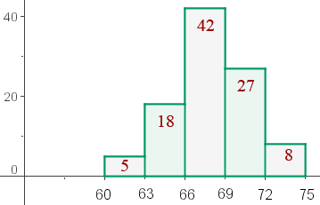

Statistical Word Problems
1. The numbers 4.47 and 10.15 are added to a set of 5 numbers whose mean is 7.31. What is the mean of the new set of numbers?
2. A dentist records the number of cavities in 100 children from a school. The information obtained is summarized in the following table:
| No. of cavities | fi | ni |
| 0 | 25 | 0.25 |
| 1 | 20 | 0.2 |
| 2 | x | z |
| 3 | 15 | 0.15 |
| 4 | y | 0.05 |
1. Complete the table to obtain the values of x, y, z.
2. Create a pie chart.
3. Calculate the average number of cavities.
3. Given the set:
10, 13, 4, 7, 8, 11 10, 16, 18, 12, 3, 6, 9, 9, 4, 13, 20, 7, 5, 10, 17, 10, 16, 14, 8, 18
Find their median and quartiles.
4. A pediatrician has obtained the following table which represents the number of children who begin to walk for the first time at different ages:
| Months | Children |
| 9 | 1 |
| 10 | 4 |
| 11 | 9 |
| 12 | 16 |
| 13 | 11 |
| 14 | 8 |
| 15 | 1 |
1. Draw the respective frequency polygon.
2. Calculate the mode, median, mean and variance.
5. Complete the missing data in the following statistical table:
| xi | fi | Fi | ni |
| 1 | 4 | 0.08 | |
| 2 | 4 | ||
| 3 | 16 | 0.16 | |
| 4 | 7 | 0.14 | |
| 5 | 5 | 28 | |
| 6 | 38 | ||
| 7 | 7 | 45 | |
| 8 |
Also, calculate the mean, median and mode of this distribution.
6. Consider the following data: 3, 8, 4, 10, 6, 2.
1. Calculate its mean and variance.
2. If all the above data was multiplied by 3, what would the new mean and variance be?
7. The result of throwing two dice 120 times is represented by the table:
| Sums | 2 | 3 | 4 | 5 | 6 | 7 | 8 | 9 | 10 | 11 | 12 |
| No. of Times | 3 | 8 | 9 | 11 | 20 | 19 | 16 | 13 | 11 | 6 | 4 |
1. Calculate the mean and standard deviation.
2. Find the percentage of values in the interval (x − σ, x + σ).
8. The heights of the players (in centimeters) from a basketball team are represented by the table:
| Height | [170, 175) | [175, 180) | [180, 185) | [185, 190) | [190, 195) | [195, 2.00) |
| No. of players | 1 | 3 | 4 | 8 | 5 | 2 |
Calculate:
1. The mean.
2. The median.
3. The standard deviation.
4. How many players are above the mean plus one standard deviation?
9. The result of throwing one dice 200 times is represented by the following table:
| 1 | 2 | 3 | 4 | 5 | 6 | |
| fi | a | 32 | 35 | 33 | b | 35 |
Determine the value of a and b knowing that the average score is 3.6.
10. The following graph is a histogram representing the weight of 100 children:

1. Create the respective table of distribution.
2. If John weighs 72 pounds, how many students are lighter than he is?
3. Calculate the mode.
4. Calculate the median.
5. In what quartile are 25% of the heaviest pupils found?
11. Given the absolute cumulative frequency table:
| Age | Fi |
| [0, 2) | 4 |
| [2, 4) | 11 |
| [4, 6) | 24 |
| [6, 8) | 34 |
| [8, 10) | 40 |
1. Calculate the arithmetic mean and standard deviation.
2. Calculate the difference between the values that are the 10 central ages?
3. Create the respective absolute cumulative frequency polygon.
12. Person A has a height of 1.75 meters and lives in a city where the average height is 1.60 meters and the standard deviation is 20 centimeters. Person B is 1.80 meters and lives in a city where the average height is 1.70 meters and the standard deviation is 15 centimeters. Which of the two is considered to be taller compared to their fellow citizens?
13. A teacher distributed two tests to a group of 40 pupils and obtained the following results:
A mean of 6 for the first test with a standard deviation of 1.5 and a mean of 4 for the second test with a standard deviation of 0.5.
A pupil obtains a score of 6 in the first test and 5 in the second. With regard to the rest of the group: in which of the two tests did he obtain a better score?
14 The attendance at 4 cinema halls on a given day was 200, 500, 300 and 1,000 people.
1. Calculate the dispersion of the number of attendees.
2. Calculate the coefficient of variation.
3. If there were 50 attendees more in each room on the same day, what effect would it have on the dispersion?